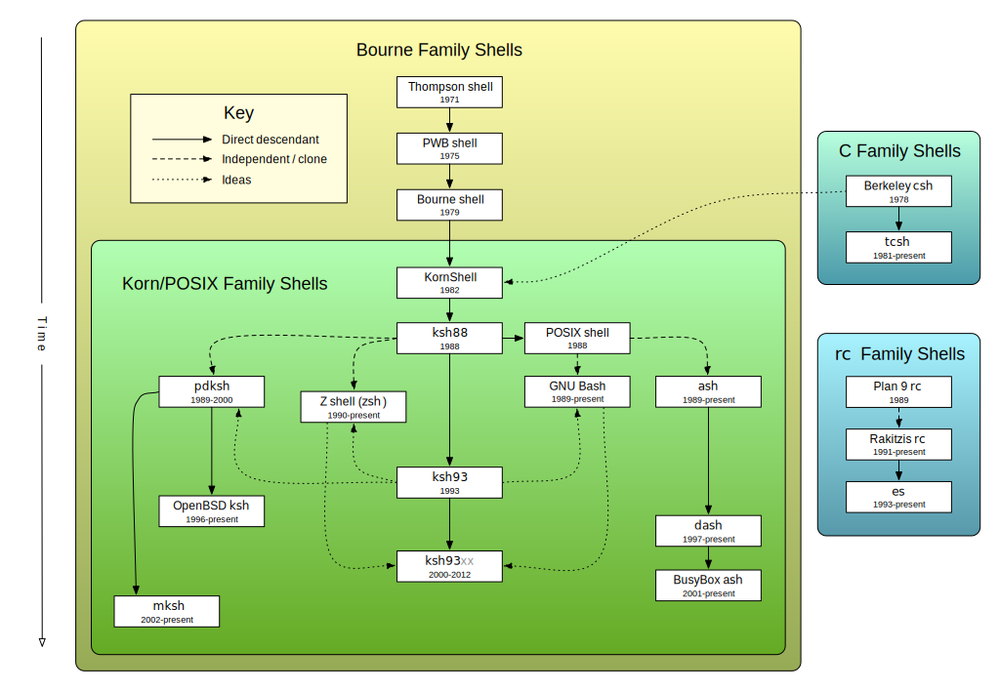

3.1. Conceptos básicos¶
Bajo este epígrafe se revisan algunos conceptos básicos del lenguaje de la shell.
3.1.1. Sabores¶
Lo primero. cuando decidimos introducirnos en la programación shell, es tener presente que no aprenderemos el «lenguaje de la shell», sino «el lenguaje de una de las shells», porque en el mundo UNIX hay multitud de intérpretes de comandos:
Compatibles con sh, es decir, con la Bourne shell original, que fue la shell de UNIX v7[1], y, más específicamente, con el estándar POSIX[2] derivado de ella:
- ksh (KornShell)
Añadió a la Bourne SHell original extensiones, muchas inspiradas en csh, lo que le valió para que su versión de 1988 (ksh88) se tomara como base para establecer el estándar POSIX. De hecho, las variantes de esta familia de shells derivan de ksh88 y no del sh original. Versiones posteriores añaden extensiones al estándar. Es la shell predeterminada en OpenBSD.
- ash (Almquist shell)
Es una implementación libre del estándar citado con algunos pocos añadidos. Es la shell predeterminada para los usuarios (pero no para root) en FreeBSD Su variante para Debian se llama dash (la «d» significa Debian), que es, desde Squeeze, la shell a la que apunta preferentemente
/bin/sh[3]. En ubuntu se optó por ella, incluso antes de que lo hiciera Debian[4].- bash (GNU Bourne shell)
Es la shell del proyecto GNU Añade extensiones al estándar POSIX. Es el intérprete interactivo predeterminado en la mayoría de los sistemas linux , y lo es de MacOsX desde la versión 10.3.
- busybox
Es un programa que incluye en un sólo ejecutable muchos de los programas básicos del mundo UNIX (cat, grep, find, etc.[5]) y entre ellos la propia shell. En lo relativo a la shell es descendiente directo de dash). Su importancia estriba en que muchos de los sistemas que tienen un linux empotrado (como los dispositivos de red), lo incluyen por ligereza y ahorro de espacio[6]. También hay algunas distribuciones mínimas de linux que lo incorporan como la excelente SliTaZ. Debian dispone un paquete para su instalación.
- zsh
Compatible con el estándar POSIX cuando se ejecuta como
/bin/shy procura la compatibilidad con bash, aunque esta no es total. También tiene un módulo de compatibilidad con ksh.
Compatibles con csh (C shell), que no son en absoluto compatibles con sh. Procuran tener una sintaxis más cercana al lenguaje C. El único descendiente reseñable de la versión tradicional es tcsh. tcsh fue la shell predeterminada para Mac Os X hasta la versión 10.2; y lo es del administrador en FreeBSD.
Compatibles con rc, la shell de Plan 9.
Otros intérpretes no pertenecientes a ninguna de estas familias como por ejemplo, fish o xonsh[7].
Un esquema revelador del parentesco entre todas estas shells es el siguiente[8]:
Ver también
Échele una lectura a esta interesante respuesta de unix.stackexchange.com y, si tiene problemas de insomnio, a este documento sobre las distintas shell.
Nota
En estos apuntes nos centraremos en el estándar POSIX y en las extensiones de bash. Durante el desarrollo de los apuntes, se procurará dejar claro qué forma parte del estándar y qué es una extensión de bash incompatible; y se usarán como shells de referencia dash, busybox y bash. De las tres, sólo busybox no está instalada por defecto en Debian, pero está empaquetada, por lo que es muy fácil su instalación. Si tras escribir un script deseamos comprobar si es compatible con él, basta con ejecutarlo así:
$ busybox sh nombre_del_script.sh
Una herramienta muy útil para saber si estamos usando una extensión ajena al estándar y que, además, aporta otras notificaciones interesantes es shellcheck.
¿Qué shell debo usar para programar scripts?
Ciñéndonos a la familia de shells derivadas de la Bourne Shell, nuestra elección puede basarse en algunos criterios:
Ceñirse al estándar tiene dos ventajas:
bash es una shell con esteroides: tiene extensiones que pueden facilitarnos la tarea, pero eso la hace más pesada lo que deriva en un consumo de más recursos y una menor velocidad.
Nota
Una interesante comparación entre el rendimiento de distintas shells puiede encontrarse en esta respuesta de unix.stackexchange.com. Usando el script de referencia, la shell más rápida es dash y tras ella busybox. El script no usa órdenes externas a la shell, lo que favorecería el rendimiento de busybox, que implementa internamente muchas de ellas, por lo que en el caso de un script real es posible que se volvieran las tornas.
bash no está presente en todos los linux. Si nos ceñimos a las distribuciones más usadas, sí; pero en algunos linux como los empotrados en dispositivos de red lo habitual es encontrarse con busybox. Ceñirnos al estándar POSIX nos asegura que nuestro script se ejecutará en practicamente todos los linux.
Las extensiones al estándar añaden muchísimas comodidades al uso interactivo (de ahí que en Debian, por ejemplo, se use bash para tal fin), pero no tantas a la programación: las más sobresalientes son los arrays, la orden [[ y algunas redirecciones (here string). Lo que es definitivamente una mala idea es usar sintaxis que rompa gratuitamente la compatibilidad (p.e. la palabra
functionque permite usar bash en la declaración de funciones).La regla más juiciosa es introducir incompatibilidad si esta realmenta nos facilita y simplifica la programación.
El propósito del script es importante. Un script que pueda llegar a correr en un sistema empotrado es obvio que no puede escribirse en bash; si lo hacemos con la intención de que lo usen terceros, también tiene interés que procuremos la mayor portabilidad posible[9].
Advertencia
Es muy importante tener presente que, cuando programamos con la shell, lo más habitual es que necesitemos usar órdenes externas a la propia shell, como grep o sed. Estas órdenes también forman parte del estándar y sus implementaciones, como en el caso de la propia shell, pueden incluir extensiones ajenas al estándar[10]. Así pues, la incompatibilidad puede producirse en la invocación de una orden y no en la programación shell en sí.
Lo cierto es que en los sistemas linux, lo habitual para estas herramientas básicas es encontrarse o una implementación independiente (muy comúnmente la del proyecto GNU) o, en linux empotrados, la implementación del proyecto busybox.
Ver también
Ver también
El manual de autoconf tiene un apartado a discutir sobre cómo escribir script portables
3.1.2. Características¶
Antes de empezar, es útil saber que el lenguaje de la [Bourne] shell es:
Imperativo de programación estructurada.
Puramente interpretado. Esto significa que el programa al ejecutarse, se interpreta línea a línea, sin compilaciones previas a bytecode como hacen otros lenguajes interprados. Obviamente, esto lo hace una interpetación muy lenta.
De tipado dinámico y débil. Es débil hasta el punto de que el uso de variables inexistentes no provoca error alguno[11].
3.1.3. Línea de shebang¶
SheBang es el nombre con el que se conoce a los caracteres #!, que
indican cuál es el intérprete con el que debe interpretarse el contenido del
fichero. La línea que contiene la shebang, debe ser siempre la primera
del fichero. Por ejemplo, suponiendo que tengamos el fichero ejecutable
caca.sed con este contenido:
1#!/bin/sed -f
2
3/^[^#]/!d
Al ejecutarlo como:
$ ./caca.sed < /etc/ssh/sshd_config
la shell tomará sed, ya que es el que indica la shebang que debe usarse e interpretará con él el contenido (la línea 3). La consecuencia es que lograremos lo mismo que habiendo hecho:
$ sed '/^[^#]/!d' /etc/ssh/sshd_config
Por tanto cuando escribamos un script en el lenguaje de la shell debemos especificar cuál es el lenguaje de la shell con el que debe interpretarse:
1#!/bin/sh
2
3echo "Hola, mundo"
Y en este punto es importante reparar en qué shell se invoca: en Debian, tal
y como se ha escrito, se invocará a sh, o sea, a dash y no
a bash. Es importante tener esto presente: si se mantiene la
compatibilidad con el estándar POSIX entonces puede escribirse
#!/bin/sh, pero si se usan extensiones de bash, entonces
habrá que especificarse que se use bash con #!/bin/bash.
3.1.4. Variables¶
Ya se trataron someramente las variables en la shell: las variables y las variables de entorno, las variables predefinidas y la definición de variables de usuario.
A lo expuesto en aquel momento, hay que añadir la posibilidad que se brinda de obtener el valor modificado de la variable. Algunas posibilidades están recogidas en el estándar y otras las define bash. Para ilustrar todo ello, tomemos la siguiente variable:
$ MIVAR="dgdg.sqwer.xxxss.9"
$ echo ${MIVAR}
dgdg.sqwer.xxxss.9
En el estándar se recogen las siguientes modificaciones:
Mostrar el valor de la variable o un valor alternativo, si esta no tiene valor:
$ echo ${MIVAR:-Alternativo} dgdg.sqwer.xxxss.9 $ echo ${NODEFINIDA:-Alternativo} Alternativo
Una variante de esto, que, además de mostrar el texto alternativo, asigna el valor a la variable:
$ echo ${MIVAR:=Alternativo} dgdg.sqwer.xxxss.9 $ echo ${MIVAR} dgdg.sqwer.xxxss.9 $ echo ${NODEFINIDA:=Alternativo} Alternativo $ echo ${NODEFINIDA} Alternativo
Mostrar el valor alternativo, sólo en caso de que la varible tenga valor:
$ DOMINIO=aula.ies $ echo www${DOMINIO:+.$DOMINIO} www.aula.ies $ DOMINIO="" $ echo www${DOMINIO:+.$DOMINIO} www
Eliminar la más corta parte final del valor que coincide con la subcadena suministrada:
$ echo ${MIVAR%.9} dgdg.sqwer.xxxss
Es habitual usar comodines en este caso:
$ echo ${MIVAR%.*} dgdg.sqwer.xxxss
Eliminar la más larga parte final del valor que coincide con la cadena suministrada:
$ echo ${MIVAR%%.*} dgdg
Eliminar la más corta parte inicial del valor que coincide con la cadena suministrada:
$ echo ${MIVAR#dg} dg.sqwer.xxxss.9
Es habitual usar comodines en este caso:
$ echo ${MIVAR#*.} sqwer.xxxss.9
Eliminar la más larga parte inicial del valor que coincide con la cadena suministrada:
$ echo ${MIVAR##*.} 9
bash y busybox, además, añaden las siguientes sustituciones:
Modificar la primera ocurrencia de una subcadena:
$ echo ${MIVAR/dg/123} 123dg.sqwer.xxxss.9
Modificar todas las ocurrencias de una subcadena:
$ echo ${MIVAR//dg/123} 123123.sqwer.xxxss.9
Extraer una subcadena del valor, fijando la posición inicial y la longitud (la primera posición es 0):
$ echo ${MIVAR:3:6} # A partir de la posición 3, seis caracteres. g.sqwe $ echo ${MIVAR:3} g.sqwer.xxxss.9 $ echo ${MIVAR::3} dgd
Nota
Estas posibilidades de modificación evitan el uso de órdenes externas como grep, sed, cut o expr. El último ejemplo puede resolverse así:
$ echo $MIVAR | cut -c1-3
dgd
Además, bash exclusivamente introduce el concepto de expansión indirecta, que permite obtener el valor de una variable cuyo valor es otra variable:
$ saludar="Hola"
$ despedir="Adiós"
$ accion="saludar"
$ echo ${!accion}
Hola
Para lograr esto mismo en el estándar POSIX no habría más remedio que recurrir a eval:
$ eval echo \$$accion
Hola
Ámbito
Quien tenga unos conocimientos mínimos de programación sabe que al declarar o usar variables dentro de un programa es muy importante saber cuál es su ámbito, esto es, la zona del programa en la que tienen existencia. Las reglas en programación shell son las siguientes:
Las variables son todas de ámbito global y tienen existencia en todo el script a partir de la línea en que son definidas por primera vez (en la shell basta darles valor para definirlas).
Nota
En el estándar POSIX no existen variables locales, aunque practicamente todas las implementaciones de la Bourne shell habilitan algún mecanismo para definir variables locales a la función. Lo veremos más adelante.
Son heredadas por las subshells que podamos crear dentro del script:
$ a=2; (echo $a) 2
Ahora bien:
Si queremos hacerlas accesibles a programas ejecutados en el script, es necesarios exportarlas usando la palabra reservada export.
Es imposible exportar variables de un subshell a la shell superior:
$ (b=2); echo $b # b no está definida. $ b=1; (b=2); echo $b 1
3.1.5. Sustituciones en línea¶
Deben repasarse los comodines, los caracteres de espaciado, los expandibles y la evaluación aritmética. Por supuesto, también es necesario saber cómo evitar estas sustituciones.
Nota
En bash (no así en dash ni busybox) los alias no se expanden a menos que se habilite:
shopt -s expand_aliases
Advertencia
Uno de los aspectos más engorrosos y molestos de la programación con las shells derivadas de la Bourne shell es «el infierno de los espacios». El espacio es un carácter medianamente habitual que puede aparecer en nombres de ficheros o directorios, pero a la vez es uno de los caracteres que usa la shell (junto a la tabulación y el cambio de línea) para separar los argumentos que se pasan a los programas. Para ilustrarlo, echemos un ojo a la siguiente sesión:
$ touch "Nombre con espacios"
$ a="Nombre con espacios"
$ rm $a
rm: no se puede borrar 'Nombre': No existe el fichero o el directorio
rm: no se puede borrar 'con': No existe el fichero o el directorio
rm: no se puede borrar 'espacios': No existe el fichero o el directorio
$ rm "$a" # En este caso la solución es fácil.
Como los script consisten por lo general en estructurar llamadas más o menos complejas a unos cuantos programas y, además, las llamadas a las funciones son sintácticamente iguales que las llamadas a estos programas, nos encontramos constantemente con el problema de delimitar cuál es un argumento y cuál el siguiente[12].
Este infierno es una fuente inagotable de errores, que para evitsrse provocan que, en ocasiones, haya que complicar el código.
3.1.6. Concatenación de órdenes¶
Para escribir varias órdenes en una línea, consulte aquí.
3.1.7. Operaciones¶
Para la realización de operaciones podemos valernos de las siguientes herramientas:
- Operaciones aritméticas
Para operaciones con enteros lo mejor es usar la evaluación aritmética. Para operaciones con números en coma flotante, debemos usar un comando externo como bc, aunque pueden no estar incluido en el sistema. Una alternativa más pesada, pero que sí debería existir en todo sistema es awk.
- Operaciones lógicas
Revise más adelante el apartado dedicado a la sentencia condicional.
- Transformaciones de cadenas
Para las que implican la eliminación de caracteres al principio o al final, podemos usar algunos modificadores del valor de una variable como #, ##, % o %%
Para modificar algunos caracteres de la cadena original, puede usarse tr o sed dependiendo del caso: el primero sólo puede hacer transformaciones de un carácter a un carácter. Una alternativa es usar la extensión de bash vista anteriormente, pero ello restará portabilidad al código.
Para obtener una subcadena a partir de una posición inicial y final, bash proporciona un extensión al estándar vista más arriba, pero que debería evitarse si no se quiere sacrificar la portabilidad. Las alternativas en el estándar son el uso de cut o expr:
$ a=0123456789 $ echo ${a:1:3} # ¡No es estándar! 123 $ echo "$a" | cut -c2-4 # Menos eficiente (tubería/subshell) 123 $ expr substr "$a" 2 3 # 3 representa la longitud 123
Obtener una subcadena utilizando expresiones regulares, puede hacerse por varias vías: grep, awk, sed o expr:
$ a="Quiero rescatar este 123 escondido" $ echo "$a" | grep -Eo '[0-9]+' 123 $ echo "$a" | sed -r 's:[^0-9]*([0-9]+).*:\1:' 123 $ expr "$a" : '[^0-9]*\([0-9]\+\)' # ¡Cuidado! Hay que usar BRE, no ERE. 123
Nota
El uso de expr con expresiones regulares es bastante limitado. Nos sirve básicamente para dos tareas:
Extraer una cadena como se ha visto en el caso anterior, para lo cual hay que usar la captura (o sea, los paréntesis).
Comprobar la existencia de una cadena que cumpla el patrón referido. En ese caso, no hay que capturar y el resultado será la posición del último carácter de concordancia. Si no hay concordancia, se imprime 0, ya que el primer índice es 1. Por ejemplo:
$ expr "$a" : '[^0-9]*[0-9]\+' # Ahora no capturamos 24 $ echo $? 0
Ya que 24 es la posición en la que se encuentra el 3. Ahora bien, en caso de que simplemente se quiera comprobar una concordancia, lo más eficiente es atender al valor de retorno.
Notas al pie